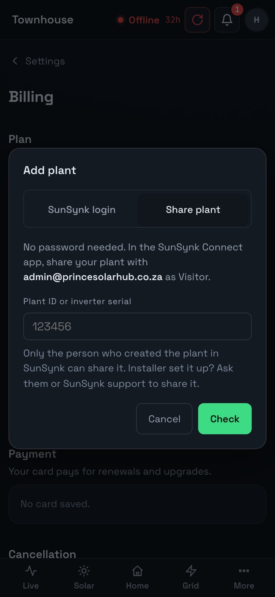

Share your SunSynk plant as a Visitor.
A Visitor can see your system but can’t change anything. Share it from your plant list in SunSynk Connect, type the other person’s email, and pick Visitor. No password changes hands.

How to share
- Sign in to SunSynk Connect, in the app or on the web.
- Open your plant list. Next to your plant, open the menu (the three dots) and choose Share.
- Type the email of the person or service you are sharing with.
- Pick Visitor. It can look but not change settings.
- Note your plant ID. It shows on the plant’s page.
Your installer may own the plant. Then only the installer can share it. Ask them to share it with you, or to share it on.
Who to share with
- Family who want to see the house’s power.
- A monitoring tool such as Prince Solar Hub, so you don’t hand over your password.
Share with Prince Solar Hub
- Share your plant with admin@princesolarhub.co.za as Visitor.
- Sign up at Prince Solar Hub and type your plant ID.
- Your last 60 days come in, and Live starts at once.
To stop, remove the share in SunSynk Connect. Prince Solar Hub stops reading at once.
More help
- SunSynk app not updatingUsually the logger has lost its Wi-Fi.
- SunSynk app error or login failedUsually SunSynk’s servers, not your system.
- SunSynk logger keeps going offlineWeak Wi-Fi, a new router, or a power cut.
- Gaps in your SunSynk historyWhy hours go missing, and how to keep them.
- Get an alert when the power goesWhy the SunSynk push is easy to miss.
Questions
Can a Visitor change my settings?
No. A Visitor can only look.
Do I have to give Prince Solar Hub my SunSynk password?
No. Share your plant with admin@princesolarhub.co.za as Visitor, then type its plant ID. Or sign in with your SunSynk login if you prefer.
See your SunSynk live.
Free for one plant. Nothing to install.
Try it freeSee pricing